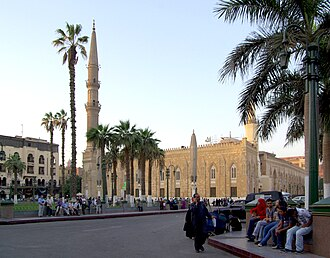

Giới thiệu
مسجد الإمام الحسين بن علي في القاهرة بمصر هو مسجد يقع في القاهرة القديمة في الحي الذي سمي باسم الإمام وبجوار المسجد أيضا يوجد خان الخليلي الشهير والجامع الأزهر.
The al-Hussein Mosque is a mosque and mausoleum, located near the Khan el-Khalili bazaar in Cairo, Egypt. Containing the tomb of Husayn ibn Ali that was originally built in 1154, the mosque and mausoleum were reconstructed in 1874. The mosque is located adjacent to the famous Al Azhar Mosque, in an area known as Al-Hussain, and is considered to be one of the holiest Islamic sites in Egypt. Some Shias believe that Husayn's head is buried on the grounds of the mosque where a shrine currently stands.
Masjid Imam Hussein adalah sebuah masjid dan makam Husain bin Ali, awalnya dibangun pada 1154, dan kemudian dibangun kembali pada 1874. Masjid ini terletak di Kairo, Mesir, dekat pasar Khan El-Khalili, dekat oleh Masjid Al Azhar yang terkenal, di daerah yang dikenal sebagai Al-Hussain.
مسجد الحسین قاہرہ، مصر کی ایک قدیم مسجد ہے جو 549ھ (1154ء) میں تعمیر ہوئی۔ تحقیق کے مطابق یہ مسجد فاطمی خلفاء کے ایک قبرستان کی زمین پر تعمیر کی گئی۔ یہ مسجد اپنے تبرکات کی وجہ سے مشہور ہے مثلاً حضرت محمد صلی اللہ علیہ و آلہ وسلم کی ڈاڑھی کے کچھ بال، ان کے کچھ کپڑے اور ایک قدیم ترین قرآن کا مکمل مخطوطہ جس کا تعلق حضرت عثمان رَضی اللہُ تعالیٰ عنہُ کے دور سے ہے اور حضرت عثمان رَضی اللہُ تعالیٰ عنہُ کے ہاتھ کا اور حضرت علی ابن ابی طالب کرم اللہ وجہہ کے ہاتھ کا لکھا ہوا ہے۔. اس کے علاوہ یہ مشہور ہے کہ امام حسین علیہ السلام کا سر مبارک جو اولاً دمشق، سوریہ میں دفنایا گیا تھا، یہاں لا کر دفنایا گیا مگر زیادہ روایات یہ ہیں کہ یہ سرِ اقدس واپس کربلا، عراق لے جا کر دفنایا گیا تھا۔
Die neugotische Imam-Husain-Moschee befindet sich in der Altstadt von Kairo, Ägypten, nahe dem Basar Chan el-Chalili unweit der berühmten Azhar-Moschee.
La moschea di al-Ḥusayn è una moschea edificata nel 1154 al Cairo (Egitto), vicino al suq detto Khān el-Khalīlī.
伊玛目侯赛因清真寺，位於埃及开罗爱资哈尔清真寺对面的一座清真寺，始建于公元1154年。后被毁，现存主体建筑为19世纪重修。該清真寺以穆罕默德的外孫侯赛因·伊本·阿里命名，法蒂瑪什葉派及一部分遜尼派穆斯林認為他的頭埋葬在寺裡；然而許多什葉派穆斯林相信侯赛因·伊本·阿里的頭與身體都一起存放在伊拉克卡爾巴拉的伊瑪目海珊聖陵。
Мече́ть аль-Хусе́йн — средневековая мечеть в Каире, Египет. Построена в 1154, находится около базара Хан эль-Халили.
Al Hussein-moskén ligger i historiska Kairo, de äldsta delarna av centrala Kairo, Egypten. Moskén har getts namn efter Husayn ibn Ali, dotterson till profeten Muhammed och vars huvud enligt Fatimiderna tros vara begravd i moskén.
Trên bản đồ
Tài liệu và đường dẫn
- Wikipédia — العربية
- Wikipédia — English
- Wikipédia — Bahasa Indonesia
- Wikipédia — اردو
- Wikipédia — Deutsch
- Wikipédia — Italiano
- Wikipédia — 中文
- Wikipédia — Русский
- Wikipédia — Svenska
- Wikidata — Q2279688
Dữ liệu: Wikidata (CC0), cập nhật 3 tháng một lần. Năm là niên đại xây dựng sớm nhất được biết của công trình: với một công trình về sau mới trở thành thánh đường (như Hagia Sophia), đó là năm của công trình ban đầu. Ảnh: Wikimedia Commons, tác giả và giấy phép ở trang của từng ảnh.